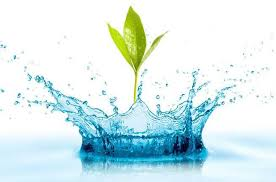

Môi trường nước được hiểu là môi trường mà những cá thể tồn tại, sinh sống và tương tác qua lại đều bị ảnh hưởng và phụ thuộc vào nước. Môi trường nước có thể bao quát trong một lưu vực rộng lớn hoặc chỉ chứa trong một giọt nước. Môi trường nước là đối tượng nghiên cứu của nhiều ngành khoa học tự nhiên, kỹ thuật và cả kinh tế – xã hội.
Hình ảnh minh họa về môi trường nước
Dễ hiểu sự bùng nổ dân số trở thành nguyên nhân làm ô nhiễm nguồn nước. Khi con người ngày càng nhiều trên trái đất dân số tăng vọt kéo theo rất nhiều hệ lụy liên quan tới nhu cầu ăn uống, sinh hoạt, đi lại, xây dựng, sản xuất nông nghiệp, công nghiệp.
Tất cả các hoạt động trong đời sống đều không thể thiếu nhân tố nước. Do đó, con người với một loạt các hoạt động phát triển có ảnh hưởng rất lớn tới môi trường tự nhiên nói chung, môi trường nước nói riêng. Vấn đề này sẽ được chúng tôi đề cập chi tiết hơn trong nội dung phần tiếp theo của bài viết.
Hiện nay, các phương tiện thông tin đại chúng đề cập ngày càng nhiều tới vấn đề rác thải nhựa trong sinh hoạt. Vấn nạn này đã, đang và không ngừng là tác nhân gây ô nhiễm nguồn nước rất nghiêm trọng. Vậy rác thải nhựa là do đâu? Do chính lối sống sinh hoạt, thói quen tiêu thụ quá nhiều đồ nhựa của con người.
Nhận thức được việc rác thải nhựa là mối đe dọa của toàn nhân loại, những năm trở lại đây, nhiều người đã có ý thức hơn trong việc sử dụng đồ nhựa và tiết giản đồ đạc. Xu hướng sống xanh và bảo vệ môi trường năm 2021 cũng như việc giữ gìn sức khỏe của công đồng được đề cao hơn bao giờ hết.
Ở Việt Nam, các con số thống kê hiện nay cho thấy đa số các bệnh viện và cơ sở y tế trên cả nước đều chưa có được hệ thống xử lý nguồn nước thải đạt yêu cầu.
Bạn hãy tưởng tượng rằng: Với lượng bệnh nhân rất lớn được tiếp nhận tại các bệnh viện cùng các biện pháp xử lý khám chữa bệnh và dịch vụ y tế. Nếu các cơ sở này không có phương hướng rác thải dụng cụ, thiết bị y tế đúng cách thì quả là mối nguy với môi trường.
Lũ lụt, gió bão, tuyết tan, hạn hán,… là những tác nhân ảnh hưởng nghiêm trọng đến nguồn nước trên trái đất. Chắc hẳn điều này ai trong chúng ta cũng đều cảm nhận được.
Song song với những tác nhân gây ô nhiễm này thì hiện tượng động thực vật chết cũng ảnh hưởng rất lớn đến nguồn nước trong tự nhiên. Cụ thể như: Ao, hồ, sông, suối, nguồn nước ngầm, nước mưa và cả nước biển nữa cũng đều bị ảnh hưởng.
Có thể nói đây là một trong 7 nguyên nhân ô nhiễm nước quan trọng nhất!
Nguyên nhân dẫn đến ô nhiễm môi trường nước đầu tiên bắt nguồn từ các hoạt động sản xuất nông nghiệp như trồng trọt, chăn nuôi. Theo đó, các loại thức ăn thừa không qua xử lý, phân và nước tiểu của vật nuôi xả trực tiếp ra ngoài chính là những tác nhân dễ dàng nhận thấy nhất.
Bên cạnh đó, trong quá trình sản xuất nông nghiệp, việc người sân sử dụng các hóa chất bảo vệ thực vật, thuốc trừ sâu, diệt cỏ,… vượt quá liều lượng được khuyến cáo cũng chính là các yếu tố gây ô nhiễm môi trường nước mặt và nước ngầm do hóa chất bị tồn dư.
Thậm chí, một số bà con nông dân còn sử dụng những loại hóa chất bị cấm như thuốc trừ sâu Monitor, Thiodol,… điều này không chỉ dẫn đến ô nhiễm nước mà còn vô cùng độc hại cho người sử dụng, nhất là khi không được trang bị dụng cụ bảo hộ lao động.
Ngoài ra, việc cất giữ, bảo quản thuốc không đúng cách, bày ở khắp nơi trong nhà cũng khiến nguồn nước sinh hoạt bị nhiễm độc. Hoặc, việc vứt bỏ các vỏ chai đựng hóa chất bảo vệ thực vật sau khi sử dụng bừa bãi xuống bờ ruộng, kênh rạch cũng là yếu tố nguy cơ.
Nước thải và rác thải từ hoạt động sản xuất công nghiệp phần lớn đều được xả trực tiếp ra ao, hồ, sông suối mà chưa qua xử lý. Do đó, đây cũng chính là một trong các nguyên nhân gây ô nhiễm môi trường nước điển hình nhất.
Trong nước thải công nghiệp có rất nhiều các anion gây ô nhiễm môi trường nước là Cl-, SO42-, PO43, Na+, K+ và vô số các hợp chất kim loại nặng mang độc tính cao như Hg, Pb, Cd, As, Sb, Cr, F… chúng sẽ hòa tan trong nước, khiến nguồn nước bị thay đổi tính chất theo chiều hướng có hại.
Ô nhiễm môi trường nước nguyên nhân ở khía cạnh công nghiệp còn do sự nhận thức, ý thức trách nhiệm bảo vệ môi trường của các chủ đầu tư, một số cơ quan, tổ chức và cộng động dân cư còn hạn chế, chỉ chú trọng vào lợi ích kinh tế trong khi xem nhẹ vấn đề bảo vệ môi trường xung quanh, vì thế tình trạng nước nhiễm bẩn là điều đương nhiên.
Trong 7 nguyên nhân gây ra ô nhiễm nguồn nước được đề cập trong bài viết, không thể không kể đến yếu tố đô thị hóa. Sự đô thị hóa là quá trình tất yếu của phát triển xã hội. Bất cứ quốc gia nào trên con đường phát triển cũng phải trải qua và sống chung với điều này.
Đất đai quy hoạch thành chung cư, tòa nhà cao ốc, cây cối bị chặt để xây nhà, xây đường, cầu vượt. Quá trình đô thị hóa nhanh chóng đã tháo gỡ bộ mặt của tự nhiên và thay vào đó là sự sầm uất, biểu hiện của cuộc sống hiện đại, của kinh tế phát triển.
Đô thị hóa là cần thiết nhưng ý thức của người sống trong đô thị cũng cần văn minh như chính những gì mà họ tạo dựng. Việc tiêu thụ quá nhiều, xả rác bừa bãi và không có ý thức với môi trường sẽ dần hủy hoại cuộc sống của chính con người.
Tóm lại, ô nhiễm nguồn nước không còn là vấn đề mới nhưng chưa giờ cũ. Chúng ta vừa trải qua năm đầu tiên của thập niên mới 2020 với những biến động khôn lường từ dịch bệnh, thiên tai.
Những điều mà tự nhiên ban trả lại con người không phải ngẫu nhiên mà chính hệ quả khó tránh khỏi của việc khai thác, tiêu thụ quá mức mà không biết gây dựng. Ý thức trách nhiệm bảo vệ môi trường nói chung, bảo vệ nguồn nước nói riêng là điều cấp bách và duy nhất để con người cải thiện chất lượng cuộc sống.
Ngày nay, vấn đề ô nhiễm môi trường, đặc biệt là ô nhiễm nguồn nước đã và đang ngày càng trở nên nghiêm trọng ở Việt Nam. Trên các phương tiện thông tin đại chúng, chúng ta có thể dễ dàng bắt gặp những hình ảnh, những thông tin môi trường bị ô nhiễm. Bất chấp những lời kêu gọi bảo vệ môi trường, bảo vệ nguồn nước, tình trạng ô nhiễm càng lúc càng trở nên trầm trọng. Hầu hết sông hồ ở các thành phố lớn như Hà Nội và TP. HCM, nơi có dân cư đông đúc và nhiều khu công nghiệp lớn đều bị ô nhiễm.
Phần lớn lượng nước thải sinh hoạt (khoảng 600.000 m3 mỗi ngày, với khoảng 250 tấn rác được thải ra các sông ở khu vực Hà Nội) và công nghiệp (khoảng 260.000 m3 nhưng chỉ có 10% được xử lý) đều không được xử lý, mà đổ thẳng vào các ao hồ, sau đó chảy ra các con sông lớn tại vùng Châu Thổ sông Hồng và sông Mê Kông. Ngoài ra, nhiều nhà máy và cơ sở sản xuất như các lò mổ và ngay bệnh viện (khoảng 7.000 m3 mỗi ngày, chỉ 30% là được xử lý) cũng không được trang bị hệ thống xử lý nước thải.
Trong tổng số 183 khu công nghiệp trong cả nước, có trên 60% khu công nghiệp chưa có hệ thống xử lý nước thải tập trung. Các đô thị chỉ có khoảng 60% – 70% chất thải rắn được thu gom, cơ sở hạ tầng thoát nước và xử lý nước thải, chất thải nên chưa đáp ứng yêu cầu về bảo vệ môi trường… Hầu hết lượng nước thải chưa được xử lý đều đổ thẳng ra sông, hồ và dự báo đến năm 2010 là 510.000m3/ngày.
Tình trạng môi trường ở Việt Nam tuy nghiêm trọng nhưng vẫn có thể cứu vãn nếu mỗi người dân biết góp sức của mình, chung tay bảo vệ môi trường. Vì tương lai một Việt Nam xanh, sạch, đẹp chúng ta cần chung tay bảo vệ môi trường và tránh gây ô nhiễm.